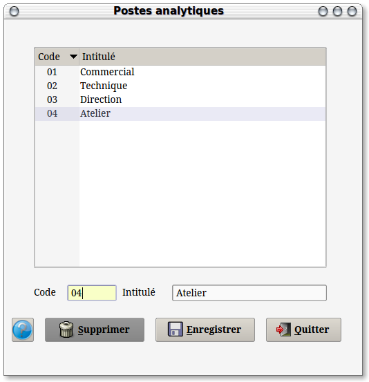
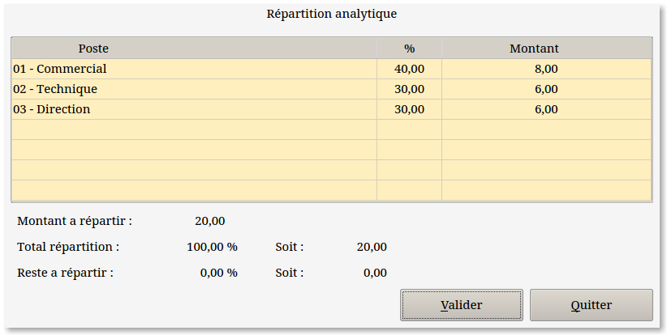

~ Comptabilité et Facturation Laurux ~

~ Comptabilité et Facturation Laurux ~ |
|
|
|
1-
Généralités.
La comptabilité analytique s'active dans
l'onglet "Comptabilité" des préférences.
Dès lors, en comptabilité, on aura une nouvelle
constante "Postes analytiques". Il faudra
donc passer par cette table pour créer les différents postes utilisés.
Ensuite, dans la table des "Comptes",
on aura un onglet supplémentaire nommé "Analytique"
qui apparaitra lors de l'appel des comptes de bilan et de gestion. Cet
onglet servira à la saisie des postes et de leur éclatement en
pourcentage.
Ceci étant fait, la saisie des écritures ouvrira une
nouvelle fenêtre qui affichera chaque poste paramétré avec son montant
prédéfini. Ces données (poste, valeur ou pourcentage) pourront être modifiées.
La validation de cette fenêtre générera les écritures analytiques dans
une table des mouvements analytiques.
Par la suite il sera possible d'imprimer les
journaux analytiques ainsi que les extraits des compte analytiques.
Les écritures analytiques sont conservées pendant 5
exercices et, comme pour les écritures normales, on pourra imprimer les
journaux ou les extraits de comptes pour ces 5 exercices archivés.
NB: C'est la clôture annuelle qui se chargera
d'archiver les écritures analytiques.
2- Postes
analytiques.

4- Saisies
des écritures analytiques.

Lors de la validation de la saisie d'une
ligne d'écriture (achat, OD ou ventes) sur un compte parametré dans la
table des comptes on aura une fenêtre qui affichera les postes
concernés.
Il sera possible de modifier chaque zone. La validation ne sera possible que si le total de la répartition est égal au montant à répartir.
Dans le
menu des impressions en comptabilité on aura une entrée
supplémentaire "Impressions analytiques"permettant
l'impression des journaux analytiques et des extraits de comptes
analytiques.
----------------------------------------------------------------------------------------------------------------------